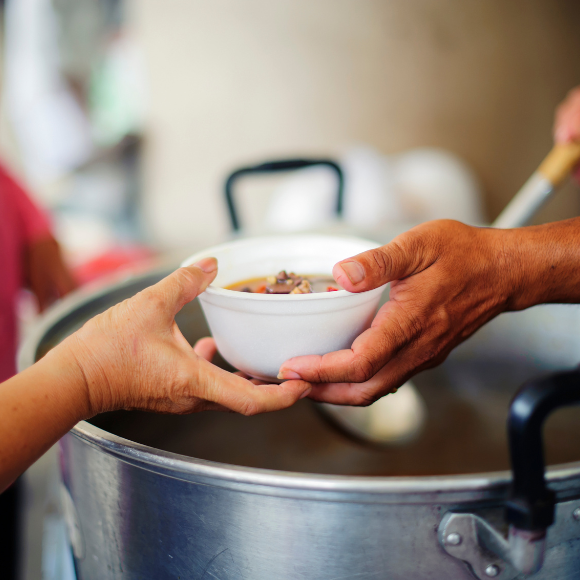

Quem somos?
A Prisma é uma organização sem fins lucrativos dedicada a promover a dignidade humana e o bem-estar social. Temos como principal missão proporcionar apoio e oportunidades para pessoas em situação de vulnerabilidade. Vizamos ser uma referência em ações sociais, inspirando mudanças positivas e empoderando comunidades.
Junte-se a nós Conheça nossos projetosHistória
Fundada em 2010 por um grupo de voluntários dedicados, a ONG Prisma nasceu com o propósito de promover impacto social positivo e inclusão. O nome "Prisma" reflete a essência da organização, simbolizando diversidade, transformação e a capacidade de espalhar luz e esperança em várias direções. Desde então, tornou-se uma das principais referências em ação social no país.
Equipe
- Diretor Executivo: Dr. Alexander Dumas
- Coordenadora de Projetos: Ana Martins
- Equipe de voluntários: Mais de 500 pessoas comprometidas.
Confira nossos projetos sociais
A Prisma é um espaço onde a dedicação ao próximo se une à excelência profissional. Liderada pelo Dr. Alexander Dumas, oferecemos serviços integrados de saúde, bem-estar e qualificação profissional, visando inclusão, igualdade e empoderamento.

- Sopa solidária
- Curso de segurança particular
- Curso profissionalizante de barbeiro
- Nutrição e aconselhamento alimentar
- Campanhas de vacinação e imunização
Eventos
Eventos Recorrentes
- Café solidário: Encontro mensal para arrecadação de fundos e concientização sobre causas sociais.
- Workshops de qualificação: Treinamento bimestrais para habilidades profissionais.
- Dia de Saúde: Atendimento médico gratuito trimestral.
Eventos anuais
- Gala de Solidariedade: Noite de arrecadação de fundos com shows e leilões.
- Feira de oportunidades: Exposição de produtos artesanais e serviços oferecidos por beneficiários.
- Conferência de inclusão social: Debate sobre políticas públicas e soluções para desafios sociais.
Eventos especiais
- Campanha natalina: arrecadação de donativos e presentes para famílias carentes.
- Maratona de voluntariado: Dia de ação comunitária com atividades de limpeza e reforma.
- Noite Cultural: Show de música, teato e dança com artitas locais.

Ficou alguma dúvida?
Quais os tipos de pessoas que a ONG Prisma atende?
Atendemos todos os tipos de pessoas que estejam em situação de vulnerabilidade, isso inclui: Moradores de rua, crianças e adolescentes em situação de risco, idosos isolados,refugiados e emigrantes, entre outros.
Todos os serviços que a ONG Prisma oferece são gratuitos?
Sim, todos os serviços que a ONG Prisma oferece são totalmente gratuitos, pois nosso intuito é ajudar pessoas em situação de vulnerabilidade social.
Como se tornar um voluntáraio?
Para ser um voluntário basta nos enviar um e-mail: contato@prisma.com.br ou nos mande uma mensagem no WhatsApp: (38) 99999-9999 Adorariamos ter você como nosso voluntáraio nessa causa.
A ONG oferece banho para moradores de rua?
Sim, a Prisma oferece banho quente. Além disso, oferece: Alimentação diária, acomodação temporária, vestuário e assistência médica e psicológica.